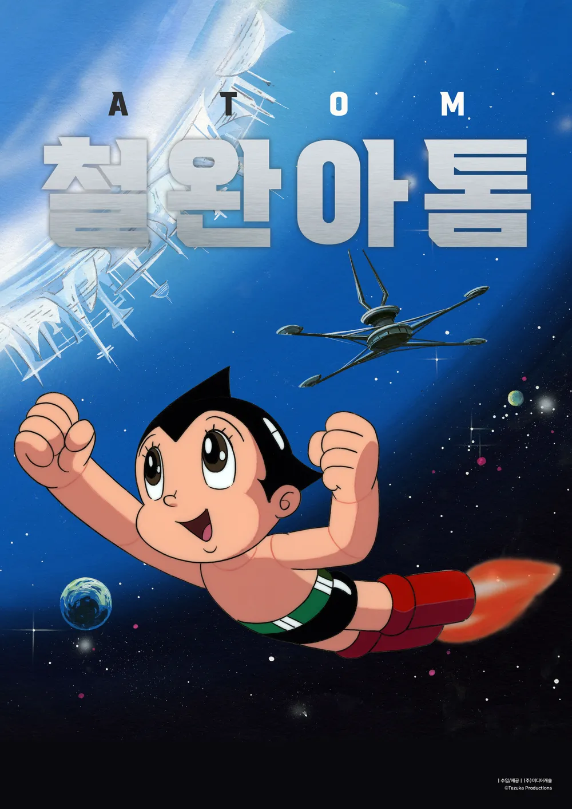
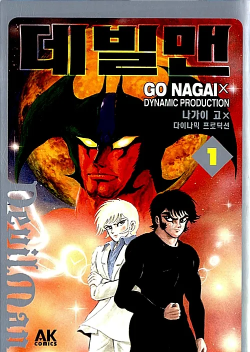
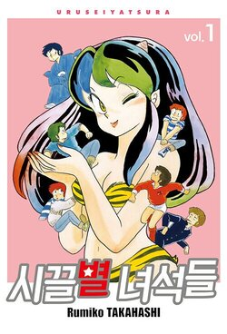
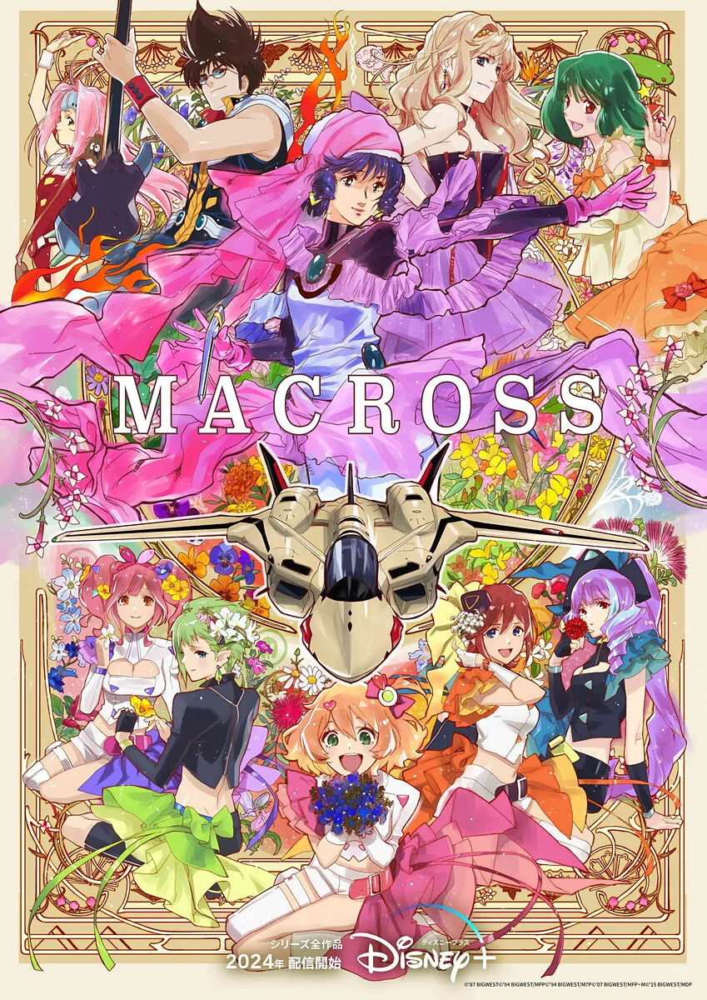

1990년대 이전의 세 가지 기반
인간성의 질문, 캐릭터 팬덤, 동인 창작 (1960~1980s)
1. 서사: 인간과 세계를 묻다

『철완 아톰』 (1950~60s)
인간의 경계,과학의 책임 탐구.

『데빌맨』 (1970s)
집단의 정의와 선악에 대한 극단적 질문 투척.
2. 캐릭터: 애착과 팬덤의 형성
『기동전사 건담』 (1970s)
절대악이 없는 전쟁. 조종사의 심리와 정치성 묘사.


『시끌별』 & 『마크로스』 (80s)
연애 서사와 노래의 결합. '캐릭터 팬덤'의 본격적 탄생.
3. 팬 참여: 창작하는 소비자
📝
코믹마켓 (1975~)
소녀만화 팬을 중심으로 한 자발적 동인 행사 시작.
생태계 원형 구축
단순 소비를 넘어, 팬들이 비평과 패러디 창작을 통해 능동적인 '생산자'로 진입하는 토대 마련.